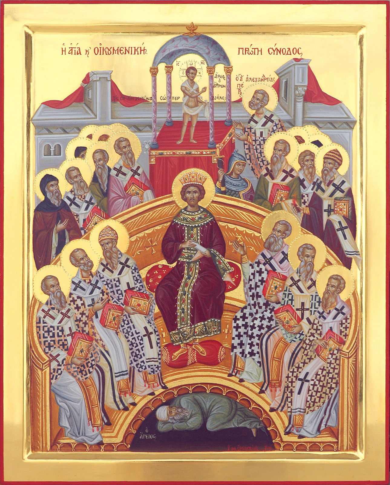
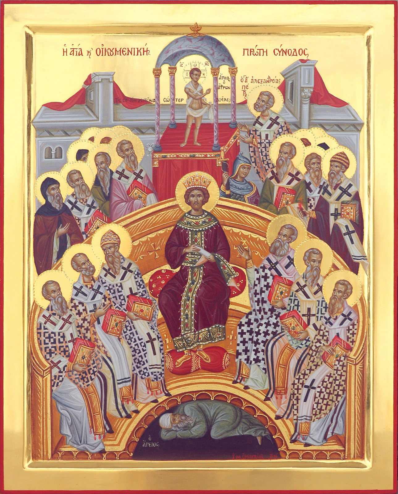
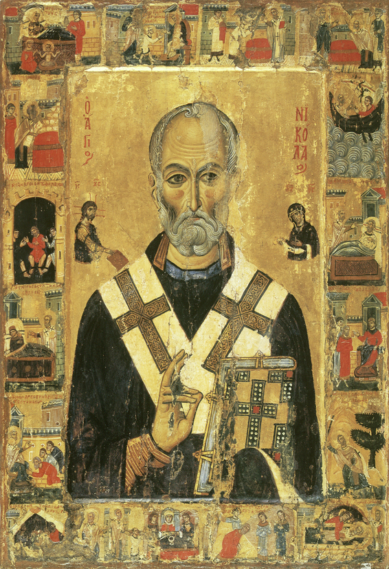
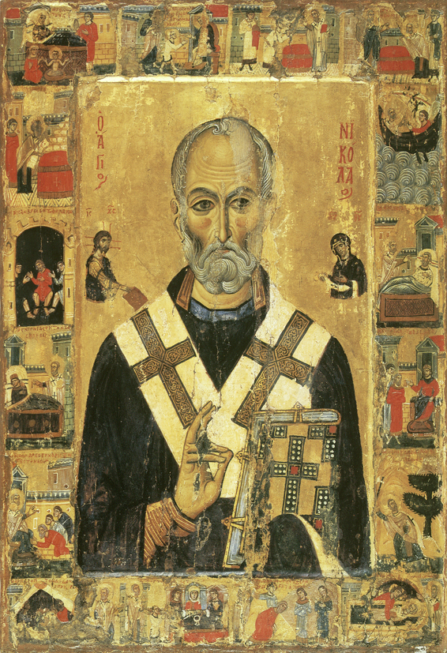

Der wundertätige Heilige Nikolaus wurde in Patara/Lykien an der Küste Kleinasiens
270 Jahre nach Christi Geburt geboren. Seine Eltern waren fromm und zogen ihn
christlich auf. Bereits als Säugling war er nah bei Gott. Jeden Mittwoch und
Freitag, also an den Fastentagen, trank er täglich nur einmal Milch, und das
nach Sonnenuntergang. In der Schule war er ein bedächtiger Schüler. Beim ersten
Glockengeläut lief er als erster voller Freude in die Kirche. Dort, unter dem
schummrigen Kerzenlicht und bei Weihrauchgeruch, betete er und sein kindliches
Herz füllte sich mit himmlischer Freude. Der Heilige Nikolaus wurde früh Waise.
Er hatte auskömmlichen Besitz und ein einfaches, aber sorgenfreies Leben.
Dennoch begab er sich nicht auf den einfachen Weg, sondern wählte den Weg
der Askese und Tugend. Als er älter wurde, wurde er Priester. Bei seiner Weihe
sagt sein Onkel, erfüllt vom Heiligen Geist: „Dieser Neue hier wird viele
Betrübte und Leidende trösten und viele Seelen in das himmlische Reich senden.‟
Der wundertätige
Heilige Nikolaus
Heilige Nikolaus
Wir erzählen wahre Geschichten!
Der wundertätige Heilige Nikolaus
Tippe auf die linke oder rechte Seite des Bildschirms, um die Seite zu wechseln. Der Ton wird automatisch beim Seitenwechsel wiedergegeben. Die Sternchen zeigen dir weitere Bilder.
Zeichnungen: Konstantina Zafeiri
Erzählung/Gesang: Archimandrit Georgios Siomos
Lektorat/App: © Markos Skoulatos & Georg Brandl
Mit freundlicher Unterstützung der Griechisch-Orthodoxen Metropolie, Allerheiligenkirche zu München
Seine Liebe für die Menschen, und besonders für die Armen und Schwachen, war
groß. Er dachte immer zuerst an die Anderen. Sein gesamtes vom Vater ererbtes
Vermögen stellte er den Armen zu Verfügung, den Witwen und den Waisen. Einst
gab es in Patara drei arme Schwestern. Der Heilige Nikolaus begab sich nachts
zu ihrem Haus und warf heimlich ein mit 300 Münzen gefülltes Tuch durch das
Fenster. Als die Familie am Morgen erwachte, traute sie ihren Augen kaum. Der
Vater lobte Gott und mit dem Geld verheiratete er seine älteste Tochter. Der
Heilige warf erneut heimlich ein Tuch mit Münzen in das Haus, und so wurde
auch die zweite Tochter verheiratet. Heimlich, damit ihn niemand beobachtete,
warf der Heilige Nikolaus auch ein drittes Tuch durch das Fenster, um seine
gute Tat zu vervollständigen. Der Vater jedoch wollte wissen, wer der Wohltäter
sei. Kaum hat er ein Geräusch gehört, begab er sich schnell vor das Haus und
sah, wie sich der Heilige Nikolaus rennend entfernte. Sofort dankte er ihm;
der Heilige aber, der kein Lob von den Menschen wollte, verlangte von ihm
Stillschweigen auf Lebenszeit.
Der Heilige Nikolaus begab sich auf die Reise nach Jerusalem, um dort am
Allerheiligsten Grab des Herrn zu beten und einen geeigneten Ort zu finden,
um Mönch zu werden. Unterwegs mit dem Schiff, ereignete sich ein großes
Unwetter, das Schiff kämpfte gegen die schaumgekrönten Wellen an. Der Kapitän
und die Seeleute wussten nicht, was sie zu ihrer Rettung aus Seenot unternehmen
sollten und die Passagiere gerieten in Panik. Es war sicher, dass sie ertrinken
würden. Der Heilige Nikolaus kniete besonnen nieder und betete, dass das Unwetter
aufhören solle – und das Wunder geschah. Sofort begannen alle, Gott und dem
Heiligen für ihre Rettung zu danken. Während des Unwetters jedoch war ein Seemann
vom Mast gefallen und blieb tot auf dem Deck liegen. Nachdem er ein Gebet
gesprochen hatte, fasste der Heilige Nikolaus den toten Seemann am Arm, und
dieser erwachte zum Leben, als ob er von einem tiefen Schlaf erwacht sei. Als
sie in Jerusalem ankamen, betete der Heilige am Allerheiligsten Grab und
beschloss, im Heiligen Land zu bleiben. Es erschien jedoch ein Engel des Herrn
und befahl ihm, in seine Heimat zurück zu kehren.

Zu jener Zeit trat der Häretiker Arius mit falschen Vorstellungen über Gott auf.
Einige Unglückliche glaubten, er lehre die Wahrheit, und folgten seiner Häresie.
Der Große und Heilige Konstantin, der Kaiser, lud alle Bischöfe in die Stadt Nicäa
ein, um zu beten und die göttliche Wahrheit ans Licht zu bringen. 318 Kirchenväter
trafen zusammen, unter ihnen der Heilige Athanasius und der Heilige Spyridon. Als
Arius die Kirchenväter mit seiner Lehre in eine schwierige Lage brachte,
vollbrachte der Heilige Spyridon das Wunder mit dem Dachziegel. Er nahm ein Stück
Ziegel in die Hand, betete – und der Ziegel trennte sich in drei Bestandteile:
Erde, Wasser und Feuer. Mit diesem Wunder erhellte er die Dreifaltigkeit Gottes:
Vater, Sohn und Heiliger Geist. Arius jedoch fuhr fort, seine falschen Ideen mit
Trotz zu verteidigen. Der Heilige Nikolaus, obwohl ruhig und besonnen, angetrieben
von göttlichem Eifer, gab Arius einen heftigen Schlag. Da es aber verboten war, in
Anwesenheit des Kaisers zu schlagen, fesselte man den Heiligen und warf ihn ins Gefängnis.

Im Gefängnis betete der Heilige Nikolaus ununterbrochen. Am selben Abend noch
erschienen ihm Christus und die Gottesmutter und fragten ihn: „Nikolaus, warum
bist du eingekerkert?‟. „Um eurer Liebe willen‟, antwortete er voller Freude.
Daraufhin löste Christus seine Fesseln und übergab ihm das Evangelium und die
Gottesmutter zog ihm das Bischofsgewand an. Als ihm am nächsten Tag das Essen
in seine Zelle gebracht wurde, sahen die Wächter ihn das Evangelium lesend im
Bischofsgewand. Die Aufseher fragten ihn verwundert, was geschehen sei und der
Heilige erzählte ihnen, was am vorhergehenden Abend passiert ist. Der Kaiser
befahl daraufhin sofort, ihn aus dem Kerker zu entlassen und bat ihn um
Verzeihung; so taten auch die Bischöfe. So geschah dies und viele weitere
Wunder geschahen in diesen Tagen durch die Heiligen Kirchenväter, Christi
Wahrheit erstrahlte und alle dankten Gott, bevor sie zufrieden in ihre Heimat
zurückkehrten.

Viele der Wunder des Heiligen Nikolaus hatten mit dem Meer zu tun; deshalb gilt
er als Schutzpatron der Seeleute. Einmal drohten einige Seefahrer während ihrer
Reise über das Meer zu ertrinken. In dieser schwierigen Situation, wandten sie
sich an den Heiligen: „Heiliger Nikolaus, rette uns vor dem Ertrinken!‟.
Augenblicklich erschien der Heilige, übernahm das Ruder und sprach zu ihnen:
„Fürchtet euch nicht, ich bin bei euch! Ihr habt mich gerufen, und ich bin
gekommen, euch zu helfen!‟. Der Wind ließ nach, das Meer beruhigte sich und er
verschwand. Die Seeleute erreichten sicher den Hafen von Myra, ankerten dort
und wollten dem Heiligen für die Rettung vor dem sicheren Tod danken. In der
Kirche angekommen, erkannten sie ihn sofort: er war der, den sie vorher auf
dem Meer getroffen hatten. Daher gibt es am Steuer eines jeden Schiffes eine
Ikone des Heiligen Nikolaus. Auf jeder griechischen Insel gibt es wenigstens
eine Kirche, die ihm geweiht ist und die Seeleute rufen ihn in schwierigen
Situationen: „Heiliger Nikolaus, rette uns!‟
Im hohen Alter erkrankte der Heilige und verstarb kurz darauf. Während er
betete, blickte er nach oben und sah die Engel, die seine geheiligte Seele
begleiten sollten. Der Heilige Nikolaus war für das Volk die Sonne, die ihre
Seelen erleuchtete. Sein Gesicht strahlte engelsgleich, so dass es nicht nötig
war, dass er viele Ratschläge gab. Es reicht, wenn jemand ihn sieht, um Kraft zu
gewinnen. Sein Tod war für die Gläubigen schmerzhaft, aber gab ihnen auch Freude,
hatten sie doch jetzt einen so großen Fürsprecher im Himmel. Sein Leichnam wurde
in Myra in Kleinasien bestattet und die Christen bauten dort ihm zu Gedenken eine
gewaltige Kirche. Gott gab ihm das ausgezeichnete Geschenk, dass Salböl aus
seinem Grab sprudelte. Die Kirche feiert sein Fest am 6. Dezember und sieht ihn
zusammen mit den Aposteln als apostelgleich an. An jedem Donnerstag, der den
Aposteln und dem großen Bischof Nikolaus geweiht ist, werden die schönsten Hymnen
und Loblieder für den Heiligen Nikolaus gesungen, den Beschützer der Seeleute.
Regel des Glaubens und Vorbild der Milde,
Lehrer der Enthaltsamkeit bist du deiner
Herde wahrhaft gewesen.
Deshalb wurde deiner Demut Erhöhung zuteil und
deiner Armut Reichtum. Heiliger Vater Nikolaus
bitte Christus, unseren Gott, zu erretten unsere Seelen.
Lehrer der Enthaltsamkeit bist du deiner
Herde wahrhaft gewesen.
Deshalb wurde deiner Demut Erhöhung zuteil und
deiner Armut Reichtum. Heiliger Vater Nikolaus
bitte Christus, unseren Gott, zu erretten unsere Seelen.
Ionien
Lydien
Lykaonien
Kappadokien
Karien
Pisidien
Pamphylia
Kilikien
Lykien
Patara
Myra
Rhodos
Karpathos
Zypern
Libanon
Jerusalem
Israel
Kairo
Ägypten
Alexandria
 

 
